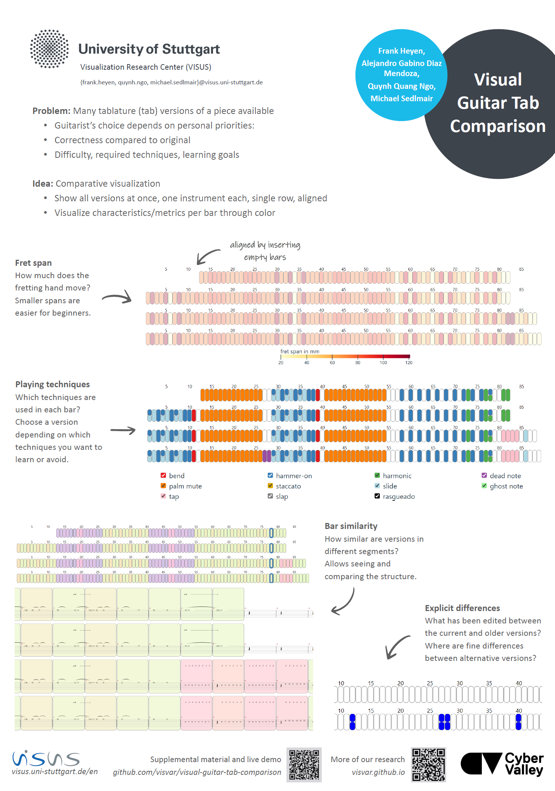

Visual Guitar Tab Comparison

Authors. Frank Heyen, Alejandro Gabino Diaz Mendoza, Quynh Quang Ngo, Michael Sedlmair
Venue. ISMIR (2023) Late-Breaking Demo Poster
Type. Late-Breaking Demo Poster
Abstract. We designed a visual interface for comparing different guitar tablature (tab) versions of the same piece. By automatically aligning the bars of these versions and visually encoding different metrics, our interface helps determine similarity, difficulty, and correctness. During our design, we collected and integrated feedback from musicians and finally conducted a qualitative evaluation with five guitarists. Results confirm that our interface effectively supports comparison and helps musicians choose a version appropriate for their personal skills and tastes.